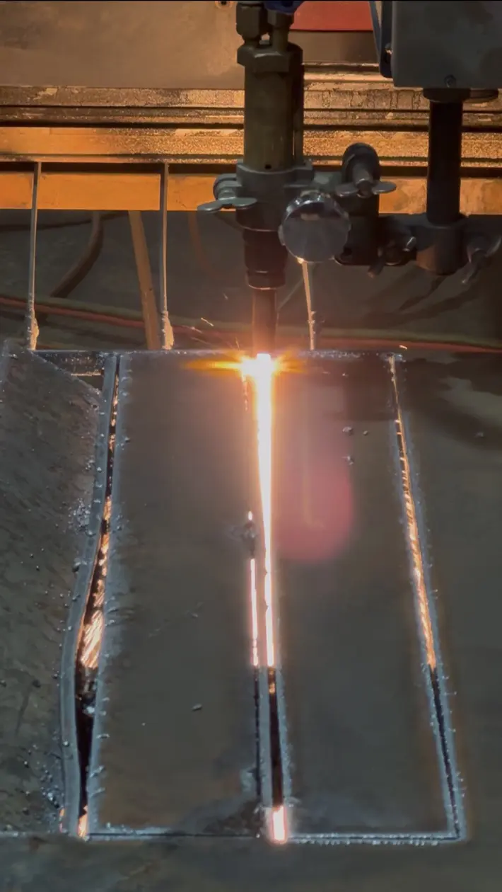
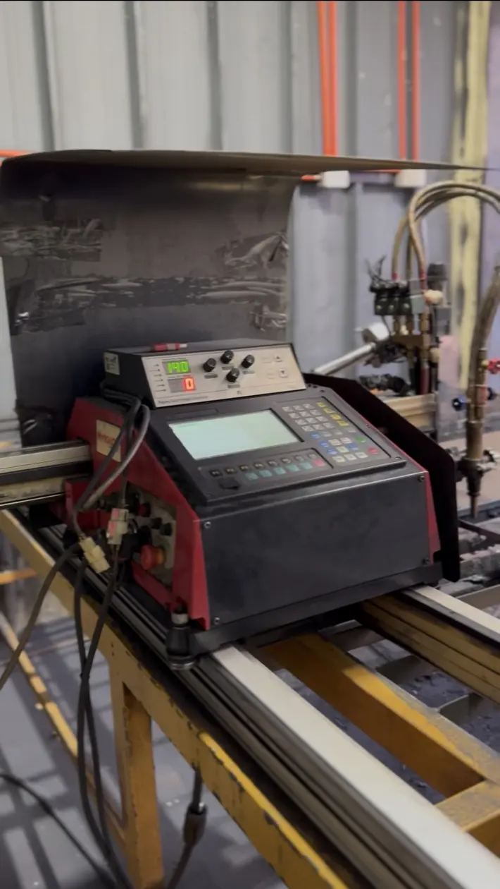
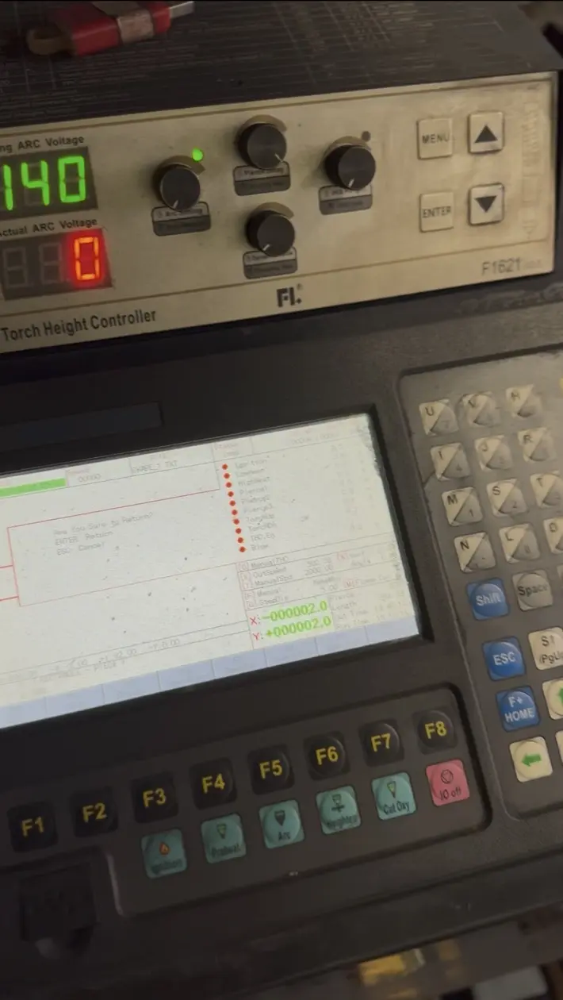

Corte CNC y fabricación
Corte de planchas en mesa plasma CNC
Proceso real de corte plasma sobre plancha metálica con desplazamiento CNC y control automático de altura de antorcha. MAQELEC ejecuta el servicio y también integra equipos con instalación y soporte.






Caso documentado
Necesidad, equipos y resultado
- Necesidad
- Obtener geometrías repetibles desde una plancha metálica.
- Equipos
- Mesa plasma CNC con control automático de altura F1621.
- Resultado
- Cortes programados y piezas identificadas para fabricación.
Proceso ejecutado
- Preparación del archivo y definición de la trayectoria de corte
- Carga y posicionamiento seguro de la plancha
- Verificación de consumibles, altura inicial y parámetros de proceso
- Ejecución CNC con seguimiento automático de altura F1621
- Retiro, identificación y terminación de las piezas cortadas